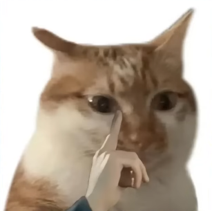

do u love cats
i love cats alot (as you can already tell)
catastic highlights
- this one's very joyous and lovely
- inquisitive cat
- this one might knows how to use the camera
- this one has an itchy nose
- and this one enjoys sweet delights
- this one is a little weird looking, but still a cat nonetheless!!!
meowlery
learn meowre about cats
most of these pictures i found is on tiktok, feel free to check them out :].
the last picture was from my friend